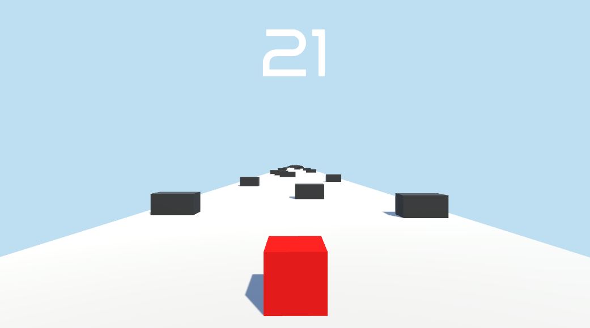

Runner 3D
Jeu vidéo / Projet de stage / Personnel
Jeu vidéo / Projet de stage / Personnel

Dans ce jeu, le joueur contrôle un cube rouge qui avance automatiquement avec pour objectif d'aller le plus loin possible afin d'augmenter son score. Le joueur peut se déplacer de gauche à droite pour éviter les obstacles.
Si un obstacle est touché, le jeu s'arrête et le score n'augmente plus. Le cube accélère progressivement, ce qui augmente la difficulté au fil du temps.
J'ai implémenté le système de déplacement, l'affichage du score basé sur la distance parcourue et réalisé le level design afin d'obtenir une difficulté équilibrée.
